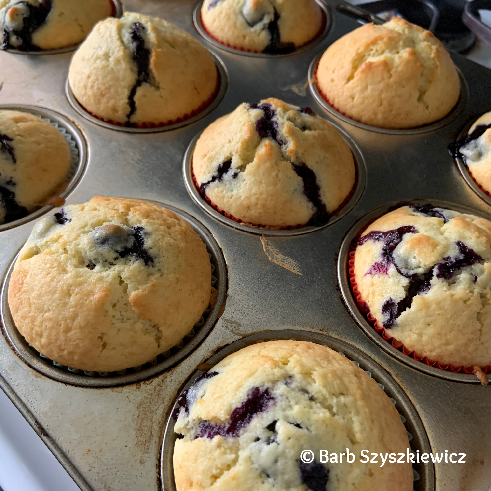

Blueberry Muffins

Description
These basic muffins can be made as-is, or you can add one of several different ingredients for a variety of muffins. All options are delicious!
Ingredients
- 2 cups all-purpose flour
- 3 teaspoons baking powder
- ½ teaspoon salt
- ¾ cup white sugar
- 1 egg
- 1 cup milk
- ¼ cup vegetable oil